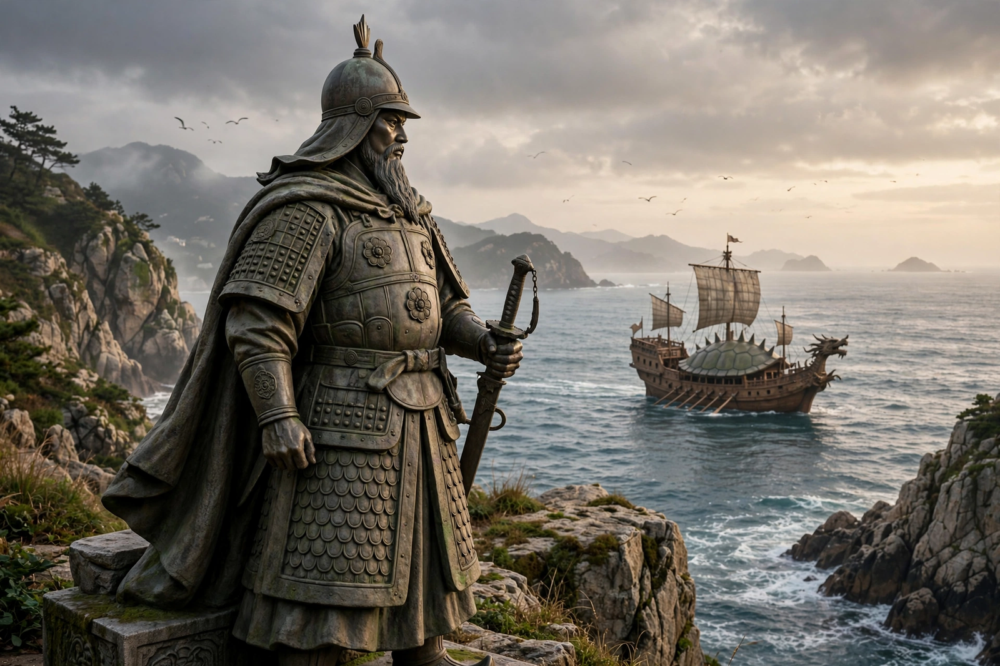

| Yi Sun-sin | |
|---|---|
| Born | 28 April 1545, Hanseong, Joseon (now Seoul) |
| Died | 16 December 1598 (aged 53), off Noryang |
| Allegiance | Joseon |
| Service | Joseon Navy |
| Rank | Supreme Naval Commander of the Three Provinces |
| Battles | Hansan Island, Myeongnyang, Noryang |
| Posthumous name | Chungmu (忠武) |

Yi Sun-sin (Korean: 이순신; 28 April 1545 – 16 December 1598) was a Korean admiral of the Joseon dynasty, celebrated for his undefeated record against the Japanese navy during the Imjin War (1592–1598). Despite being repeatedly stripped of rank by court intrigue, tortured, and forced to fight with minimal resources, Yi won every engagement he commanded — most famously at Hansan Island (1592) and at Myeongnyang (1597), where with only thirteen ships he defeated a Japanese fleet of well over a hundred. He is credited with the battlefield deployment of the armoured "turtle ship" (geobukseon) and is revered in Korea as a national hero.
Yi was born in Hanseong (Seoul) into a scholarly family fallen on hard times. He turned late to a military career, passing the military examinations in 1576 after an early failure in which he fell from his horse and broke his leg — legend holds that he bound the leg with willow branches and finished the test. He served on the northern frontier against the Jurchen, earning a reputation for integrity that repeatedly brought him into conflict with corrupt superiors; he was demoted more than once on fabricated charges. In 1591, foreseeing war with Japan, he was appointed commander of the Left Naval District of Jeolla Province and began strengthening his fleet, training crews, stockpiling supplies, and completing the turtle ship — an armoured, dragon-prowed warship covered in spikes to repel boarders.
When Toyotomi Hideyoshi's invasion fleets struck in 1592, Korea's other naval commands collapsed, but Yi won a string of victories at Okpo, Sacheon, Dangpo, and above all the Battle of Hansan Island (August 1592), where his "crane wing" formation annihilated a large Japanese fleet — a victory often called the Salamis of Korea. Japanese sea supply lines were severed, a decisive factor in the invasion's failure. In 1593 he was made Supreme Naval Commander of the Three Provinces.
In 1597 court rivals and a Japanese double-agent plot persuaded King Seonjo that Yi was insubordinate; he was arrested, tortured, and reduced to the ranks as a common soldier. His replacement, Won Gyun, promptly lost nearly the entire fleet at Chilcheollyang. Yi was hastily reinstated with the remnant — twelve ships (a thirteenth joined later). At the Battle of Myeongnyang (26 October 1597) he anchored in a narrow strait whose reversing tidal currents shattered the Japanese formation, destroying or disabling more than thirty ships without losing one of his own. "Those who seek death shall live; those who seek life shall die," he is reported to have told his captains.
Rebuilding the navy alongside a Ming Chinese allied fleet, Yi was killed by a stray bullet at the Battle of Noryang (16 December 1598), the war's final naval engagement, as the Japanese retreated. His dying instruction — "Do not announce my death; the battle is at its height" — is among Korea's most famous military episodes. Yi kept a war diary, the Nanjung ilgi, now inscribed in UNESCO's Memory of the World Register. His statue stands in Gwanghwamun Square, Seoul, his portrait appears on the 100-won coin, and military historians rank him among the greatest naval commanders in history, frequently compared with Horatio Nelson — with the difference that Yi never lost a ship in battle nor a single engagement.